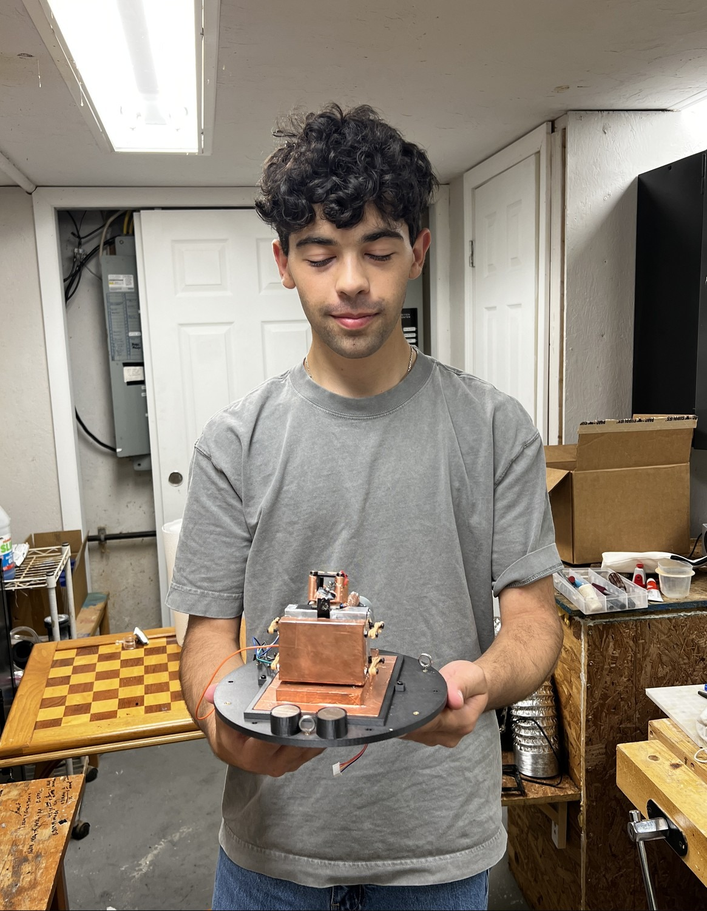
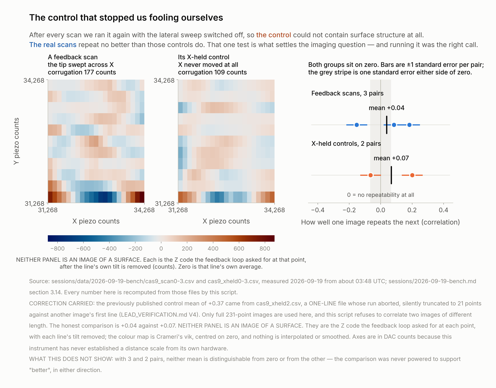

Instrument development · Scanning probe microscopy
We built a scanning tunnelling microscope in a basement
Jacob Katz — University of California San Diego
Nuh Shaheer — Worcester Polytechnic Institute
Self-directed. No faculty advisor, no grant, no laboratory. First
power-on 29 August 2026; last bench session 19 September 2026. 27 session logs, 163 raw data
files, 92 photographs of our own hardware and every analysis script are public —
including the results we later withdrew.

The whole instrument, in two hands. The copper box is the amplifier,
mounted as close to the tip as it physically fits; the black cylinders are the eddy-current
damping magnets. Jacob Katz — identification and permission to publish SAID by
Jacob, 2026-09-19. IMG_4919.
Every subsystem a tunnelling microscope needs is
built, working and calibrated. The amplifier resolves picoamps, the chain agrees with
theory to 0.13 of a standard error, and a real junction responds to voltage and to
height.
Two first-year students. A basement. Our first soldering.
Neither of us writes code, and neither had much electronics experience — this
project was the first real soldering either of us has done. It was built and run in the
basement of a house people live in, with people moving around and no control over the air or
the temperature. A wooden bench on a concrete floor, a few metres from the breaker panel.
Not a lab. Not a clean room.
This is not a disclaimer. It is the result. A tunnelling microscope is normally a
clean-room instrument — and the blocker we found and measured is exactly the class of
problem those rooms exist to remove. Stated up front, our limitation becomes a measurement of
what this environment costs you.
Conditions stated by Jacob Katz, 2026-09-19.
0.13 σ
The chain agrees with theory
Measured gain against what Ohm's law required, worked out before the run.
53 readings. MEASURED 2026-09-16
4 pA
Amplifier's own input current
Against the ~1 nA it has to find — 250 times smaller.
MEASURED 2026-09-15
16–59 MΩ
A real junction, made and swept
Resistance falls as the voltage rises — not a short, not an open.
MEASURED 2026-09-17
9–19
Counts of noise with a junction live
Our electronics are not what limits us, and we proved it with numbers.
MEASURED 2026-09-19
8 weeks
Design to a working junction
Boards ordered, frame printed, firmware written, chain characterised one stage at
a time
01
We built the whole thing
There was no kit. We designed it, ordered the boards, printed the frame, wrote
the firmware, and brought up every stage on its own before trusting the next one.
Left: the instrument on the morning it came apart to be moved. Printed frame;
springs down to the suspended platform; copper-taped scan head on a copper ground plane.
Right: where it happened — a wooden bench on a concrete basement floor, a few
metres from an electrical panel. READ, 2026-09-19.
A Teensy 4.1 drives four 16-bit converters over a 1 MHz
bus and a 26-way ribbon — X, Y and sample bias at ±3 V, Z at ±10 V —
moving a piezoelectric disc that carries a cut tungsten tip. The tip current goes into an
OPA627 transimpedance amplifier with a 100 MΩ feedback resistor, in a hand-folded copper
box, and is read back by a 16-bit LTC2326-16. Coarse approach is a 28BYJ-48 stepper on a lever.
Mechanics, controller and firmware follow Mech Panda's red-panda-stm; the scan head
and preamplifier follow Dan Berard's home-built STM. The electronics bring-up, the
software, the calibration and the controls are ours.
02
The measurement chain agrees with theory
We took the tip and sample out and clipped a known 100 MΩ resistor
where the junction would be. That makes the current something Ohm's law fixes before the
run — so the instrument is checked against a number it had no part in choosing.
Measured −3,204.8 ± 36.5 counts per volt against −3,200
predicted — agreement to 0.13 of one standard error, R² = 0.9934 over 53
readings. Twelve stages had to be right at once for those points to land on that line.
Source: sessions/2026-09-16-bench.md §3.4. What it does not show: the slope is
the ratio of two nominally 100 MΩ resistors whose tolerances were never recorded; and
the 53 readings are repeats at 8 settings, not 53 independent observations.
This is the number everything else rests on
It fixes the conversion — 320.5 counts per nanoamp — and it settles the sign, which
matters because a current that drove the reading the unexpected way would send an automatic
approach straight into the sample.
03
A real junction, with a barrier's signature
Getting a current is easy — push the tip in and there is plenty. The hard
part is showing you have a barrier: two conductors with something in between that
electrons have to cross.
Current rose from 0.85 nA at 0.05 V to 31.7 nA at 0.5 V — 3.7 times
faster than Ohm's law, fitting V1.55, with the junction resistance falling
from 59 to 16 MΩ. Eight rounds with the polarities interleaved, so drift could not
manufacture a slope; symmetric both ways to about 10%; confirmed by a bias-flip test on two
separate nights. That rules out a metallic short, which would be ohmic, and an open
circuit, which would give nothing. Source: sessions/2026-09-17-bench.md §3.15.
And the electronics are not the limit
With a junction live the noise floor is 9–19 counts; leakage through the tip lead
is under 0.06 nA across ±2 V, more than 8 GΩ; and someone stamping on the floor
two metres away moves one reading's spread from 131 to 132 pA. The building is not getting
in electrically.
04
We found the limit, and measured it
To take an image the gap has to hold still while the tip sweeps. We stopped the
motor, took our hands off the instrument, and watched where the surface went.
The surface moved by more than 43,000 Z counts within 6.4 seconds, and by
more than 56,000 within two minutes — most of the piezo's whole range — and went
out of reach altogether for 105 seconds. Source:
sessions/data/2026-09-19-morning/release_watch_run1.log. The fair question: the fast
excursion begins 0.1 s after a motor retract ended, so relaxation cannot be excluded for that
one event — but the motion reverses and overshoots its own starting point, which
relaxation does not do, and the two-minute figure is measured long after any transient.
Why that ends the imaging question, in one comparison
Over the five seconds one image takes, the gap drifts 396 to 1,722 counts. The
"structure" in every candidate image we have is 29 to 458 counts. The thing being
measured is smaller than the way the gap moves while it is being measured. Knowing that,
precisely, is the result.
05
We built controls designed to kill our own results
Every scan was run again with the sideways sweep switched off. An X-held
control has identical timing and identical loop behaviour, but the tip never travels across
the surface — so it cannot contain surface structure at all, by construction.

Like for like over full images, our scans repeat at +0.04 and their controls
at +0.07: indistinguishable, and neither differs from zero. That single test is what
settles the imaging question, and running it was the right call. Source:
sessions/data/2026-09-19-bench/cas9_*.csv.
We audited ourselves, and published what we found
At this pause point we re-derived our own published numbers from the raw files. Two
statistics we had used to dismiss our own scans turned out to be computed across aborted
files, and a reproducible feature we found most convincing turned out to be the feedback
loop recovering from a jump, not the sample. Every conclusion survived. Two of the arguments
did not — and both withdrawals are in the public record.
06
One junction is still undecided — and we know the measurement
Our best junction, two nights earlier, changed ten-fold about seven times
faster than the contact we later measured: roughly 250 Z counts per decade.
The one measurement that still looks like a surface. Six passes at each of three
places: passes at the same place agreed +0.239 while different places disagreed
−0.135. The repeat, minutes later, gave +0.056 — and an X-held
control, which cannot contain a surface, scored p = 0.020 on the same statistic. Against 209
reproducibility tests the honest threshold is p < 2.4×10−4.
Not an image, and not presented as one.
What decides it is one distance we could not resolve
Whether that junction was tunnelling turns on d, how far the tip stands from the line
through the two ball supports, which sets the lever ratio between motor and tip. Tunnelling
needs d near 26 µm — a third of a hair. Measured 2026-09-20: d is under
0.5 mm, which is as fine as the eye and a straightedge can resolve, and still 19 times
wider than the threshold. A microscope or an optical comparator closes this in minutes,
and it would settle our best junction retroactively.
Where it goes next
Measure d properly — a microscope or comparator, no power, and it settles our
best junction retroactively.
Prove the gap holds still before scanning anything — a box over the
instrument, a 15-minute recording, a gate of 200 counts over sixty seconds.
A stiffer sample than gold leaf on paper, and a sharper tip.
Three free software fixes that remove the artefact behind our most convincing false
positive: drop the first three pixels of each pass, sweep X both ways between passes, never
compare two images of different length.
What we do not claim
No image. Fifty-one recordings, none of them a demonstrable image of the sample —
and our own controls are how we know. No demonstrated tunnelling. We have a barrier
junction; the 2026-09-19 one was a pressed contact, and our best junction's status is
undecided. No atomic resolution and no scale bar anywhere — every axis is in
converter counts, because this instrument has never established a distance scale of its own.
No number is read off a photograph: captions are marked SAID or READ.
Acknowledgements and code
Mech Panda (red-panda-stm: mechanics, controller, firmware) and Dan Berard
(scan head, preamplifier) published their instruments for free. Without them there would have
been nothing to bring up.
Every session log, every raw file, every analysis script and every
withdrawn claim: github.com/jacobbkatz/We-Are-STMING